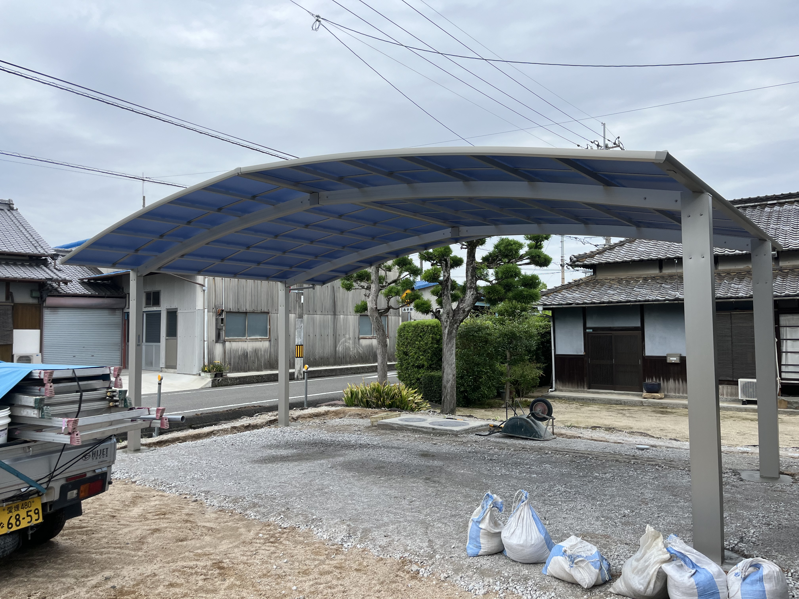

台数と使い方
現在の車だけでなく、自転車・乗り降り・将来の車種も確認します。

松山市・松前町・砥部町・伊予市・東温市ほか
施工1000台超。実際に施工する現場屋が、敷地と使い方を見て直接ご提案します。
電話は不要です。写真とおおよその寸法だけでも相談できます。FOR WIDE CARPORT
2台・3台用は、柱位置や車の出入り、積雪・風、敷地の勾配で使いやすさが変わります。カタログ価格だけで決めず、設置後に困らない納まりを現場目線で考えます。
WORKS
実際に施工した現場です。画像を押すと既存の施工事例一覧を確認できます。
HOW TO CHOOSE
現在の車だけでなく、自転車・乗り降り・将来の車種も確認します。
間口、奥行、勾配、配管を確認し、駐車の邪魔になりにくい形を選びます。
ポリカ、アルミ屋根、折板など、見た目と耐風性のバランスを整理します。
PRICE
同じ2台用でも、屋根材・梁の長さ・柱位置・基礎・既存土間の状態で工事費が変わります。そのため、安い定額だけを先に見せることはしていません。
見積に含めて確認するもの
FLOW
WHY EX-TAKUMI
施工1000台超の経験から、図面だけでは分からない現場条件まで見て判断します。大型案件も、自社施工と信頼できる協力業者の体制で対応します。
売るためだけの商品提案や、電話での強い営業はしません。相談内容を見て、必要な工事だけを率直にお伝えします。
CONTACT
「2台用が入るか」「どの形が合うか」から相談できます。LINEなら写真だけ送っていただいても大丈夫です。
LINEで写真を送るLINEが開きます。電話連絡や契約を強制することはありません。